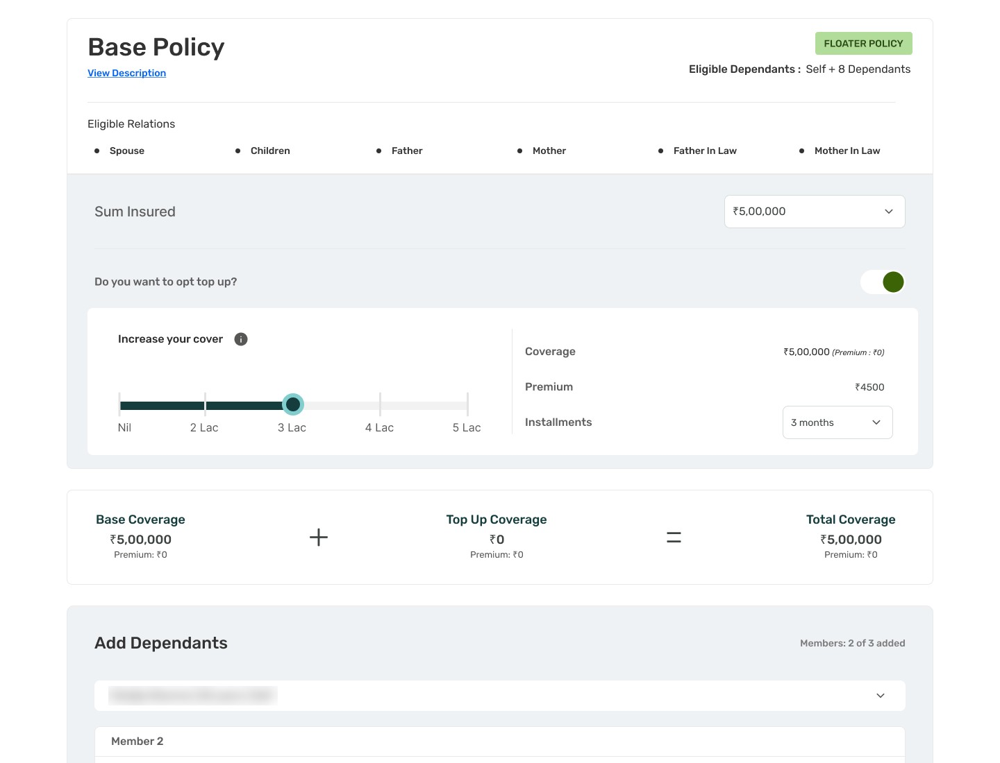

01Health insurance · Web app
Pre-Enrolment Portal
Redesigning employee health insurance enrolment so people understand each choice (cover, family, top-ups, premium) while they make it.
Bajaj Finserv Health · Vidal Health TPA · sign-in to review, configured for 72 client companies
82.9%of Zepto employees submitted their enrolment (5,179 of 6,247).Observed after launch, with no pre-redesign baseline. One client's report.
